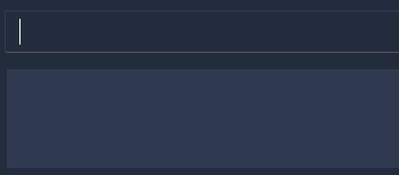

By: Team W17-4 Since: Jan 2020 Licence: MIT
- 1. Introduction
- 2. Setting up
- 3. Design
- 4. Implementation
- 4.1. Logic
- 4.2. Goto Command
- 4.3. Student View
- 4.3.1. Implementation of the Model Framework
- 4.3.2. Implementation of the Module Add, Delete and Edit Commands
- 4.3.3. Implementation of the Group Add, Delete and Edit Commands
- 4.3.4. Implementation of the Student Add, Delete and Edit Commands
- 4.3.5. Implementation of the Sort Group, Module and All Command
- 4.4. Session View
- 4.5. Claims View
- 4.6. Syntax Highlighting
- 4.7. Filter Command
- 4.8. Statistic Report Generation
- 4.9. Logging
- 4.10. Configuration
- 5. Documentation
- 6. Testing
- 7. Dev Ops
- Appendix A: Product Scope
- Appendix B: User Stories
- Appendix C: Use Cases
- Appendix D: Non-Functional Requirements
- Appendix E: Glossary
- Appendix F: Instructions for Manual Testing
- Appendix G: Effort
1. Introduction
TA-Tracker is a productivity tool made for NUS School of Computing (SoC) Teaching Assistants (TAs) who want to be able to track and manage their students and claimable hours in one place.
Teaching Assistants at SoC have to keep a track of:
-
claimable hours so that they can fill up the TSS Claims form at the end of each semester.
-
teaching-related sessions with claimable hours
-
students and their contact information
-
students' participation marks
-
notes for certain students (such as recommendations)
Rather than managing this through several excel spreadsheets and notes, TA-Tracker allows TAs to track everything in a single, convenient-to-use platform.
In particular, TA-Tracker is a Command Line Interface (CLI) application packaged with a Graphical User Interface (GUI). This means that users are expected to interact with the TA-Tracker mainly through the command line, and each command executed will evoke a visual response in the TA-Tracker.
Any help on the development of the TA-Tracker would be greatly appreciated, and there are a couple of ways that you can do so:
-
contribute to TA-Tracker 's code base by expanding its features
-
help us improve test coverage
-
propose and implement improvements on current features
This guide aims to kick-start your journey as a contributor to the TA-Tracker by getting you up to speed with how TA-Tracker 's codebase and inner workings function. It also hopes to serve as a useful reference to current contributors in times of confusion or when faced with difficulties.
2. Setting up
You can refer to the guide here.
3. Design
TA-Tracker
has been designed with Object-Oriented Programming
principles in mind. We also attempted to use Defensive Programming wherever
possible. This section serves to give a description of the
major components in the architecture of TA-Tracker. Subsequent sections
provide more information on the inner workings of individual components.
3.1. Architecture

The Architecture Diagram given above explains the high-level design of the TA-Tracker. Given below is a quick overview of each component.
The .puml files used to create diagrams in this document can be found in the diagrams folder.
Refer to the Using PlantUML guide to learn how to create and edit diagrams.
|
-
At app launch: Initializing the components in the correct sequence, and connects them up with each other.
-
At shut down: Shutting down the components and invoking clean-up methods where necessary.
Commons represents a collection of classes used by the other components.
The following class plays an important role at the architecture level:
-
LogsCenter: Used by many classes to write log messages to the TA-Tracker 's log file.
The rest of the App consists of four components.
Each of the four components
-
Defines its API in an
interfacewith the same name as the Component. -
Exposes its functionality using a
{Component Name} Managerclass.
For example, the Logic component (see the Class Diagram given below) defines its API in the Logic interface
and exposes its functionality using the LogicManager class.
How the architecture components interact with each other
The Sequence Diagram below shows how the components interact with each other
for the scenario where the user enters the command session delete 1.

session delete 1 commandThe sections below give more details of each component.
3.2. UI component
(Contributed by Fatin)
The Class Diagram below shows how the UI components interact with each other.

API: Ui.java
The UI consists of a MainWindow that is made up of parts e.g. CommandBox, ResultDisplay,
StudentTab, StatusBarFooter etc. The UI also contains 2 more windows, namely:
-
the
HelpWindowand -
the
StatisticsWindow
The UI component uses JavaFx UI framework. The layout of these UI parts is defined in
matching .fxml files that are in the src/main/resources/view folder. For example, the
layout of the MainWindow is
specified in MainWindow.fxml
The UI component,
-
Executes user commands using the
Logiccomponent. -
Listens for changes to
Modeldata so that the UI can be updated with the modified data.
3.2.1. Tabs
The Class Diagram below shows how the components in the Student Tab interact with each other.
|
All the |
The UI contains 3 tabs:
-
The
Student Tab -
The
Session Tab -
The
Claims Tab
Each of these tabs consist of one or more List Panels (e.g. StudentListPanel) and its
respective Card (e.g. StudentCard). In each List Panel, the Graphics component of
each of the List Cells is defined by the respective Card.
The other 2 Tabs follow the same structure as the Class Diagram above.
3.3. Logic component
The Logic component of TA-Tracker:
-
Processes user inputs into different
Commandobjects. -
Executes
Commandobjects to interact with theModelcomponent. -
Saves data by interacting with the
Storagecomponent.
3.3.1. Logic Structure
The following Class Diagram shows a simplified view of the structure of the Logic component.
API:
Logic.java
In the Logic component,
-
Logicbehaves as a façade class between the different TA-Tracker components -
LogicManageris the main driver class behind the logic of TA-Tracker -
LogicManagerinteracts with classes in theModelandStoragecomponents -
The logic of TA-Tracker is organised into commands and parsers
-
TaTrackerParseris the main parser -
A
Commandcan interact with classes in theModelcomponent
3.3.2. Logic Organization
The following diagram shows how the commands and parsers are organized.

|
In the Logic package,
-
There is a hierarchy of parsers, starting from
TaTrackerParser -
Within the Parser package, all parsers have been grouped into smaller packages
-
Every
Commandis created by aParserobject with a matching name -
Within the Commands package, all commands have been grouped into smaller packages
-
Every
Commandproduces aCommandResultwhen executed byLogicManager. This will modify theModelinternally (e.g. adding a student). -
The produced
CommandResultsends feedback to theUIcomponent. This feedback includes:-
Showing messages in the
UI -
Instructing the
UIto perform certain actions (e.g. displaying the help window).
-
In most cases, there are two levels of parsing before a Command is created
(e.g. SessionCommandParser passes the remaining user input to the AddSessionCommandParser
for further parsing).
However, there are some cases where only one level of parsing is needed
(e.g. for the HelpCommand, ListCommand, and ExitCommand).
These command parsers will immediately create the respective Command,
skipping the second layer of parsers.
3.3.3. Overview of Commands
Within the Commands package, all commands have been grouped into smaller packages.
The following Class Diagram shows the names of the smaller packages:
These smaller packages group the commands into different categories.
Furthermore, these packages depend on the Command class
since they contain classes that inherit from it.
For example, the Module package contains the following classes that inherit from the Command class:
-
AddModuleCommand -
DeleteModuleCommand -
EditModuleCommand
3.3.4. Overview of Parsers
Within the Parser package, all parsers have been grouped into smaller packages.
These packages have been organised in the same way as the Commands package.

These smaller packages group the parsers into different categories.
Furthermore, these packages depend on the Parser interface
since they contain classes that implement it.
For example, the Module package contains the following classes that implement the Parser interface:
-
AddModuleCommandParser -
DeleteModuleCommandParser -
EditModuleCommandParser
3.3.5. Example Logic Sequence
The following Sequence Diagram shows all the interactions inside the Logic component
when executing the group add m/CS2103 g/G03 t/lab command.

group add m/CS2103 g/G03 t/lab command
|
3.4. Model component
(Contributed by Fatin)
The following Class Diagram shows how the different Model components interact with each other.

API: Model.java
The Model,
-
Stores a
UserPrefobject that represents the user’s preferences -
Stores the TA-Tracker data
-
Exposes 5 unmodifiable
ObservableList<>objects:-
filteredStudentList, which contains all theStudentsin the TA-Tracker -
filteredSessionList, which contains all theSessionsin the TA-Tracker that have not been marked as done -
filteredDoneSessionList, which contains all theSessionsin the TA-Tracker that have been marked as done -
filteredModuleList, which contains all theModulesin the TA-Tracker -
filteredGroupList, which contains all theGroupsin the TA-Tracker
-
-
These lists can be 'observed' e.g. the UI can be bound to this list so that the UI automatically updates when the data in the list change
-
Does not depend on any of the other three components
The following Class Diagram shows the relationship between the different classes
in the Model component.
3.4.1. Example of Model Usage
The following Object Diagram shows an example of the relationship between the different Model objects.
This example is based on the state of TA-Tracker
when it is first run (without any user data).

3.5. Storage component
The following Class Diagram shows a simplified view of the Storage component.

API: Storage.java
The Storage component,
-
Can save
UserPrefobjects in Json format, and read it back -
Can save all TA-Tracker data in Json format, and read it back.
3.5.1. Saved Data
The following Class Diagram shows a breakdown of the data managed by the Storage component.

TA-Tracker saves the following data in Json format:
-
A list of
Moduleobjects representing the modules that the user is teaching -
A list of
Sessionobjects representing the sessions that the user has not completed (not marked as done)
Within each Module, there is:
-
A list of
Sessionobjects, representing the sessions that the user has completed (marked as done) for that module -
A list of
Groupobjects, representing the groups for that module that the user is in charge of, such as a tutorial or lab
Within each Group, there is:
-
A list of
Studentobjects, representing the students enrolled in the group
3.6. Common classes
Classes used by multiple components are in the tatracker.commons package.
4. Implementation
This section describes some noteworthy details on how certain features are implemented.
4.1. Logic
The Logic of TA-Tracker ensures that all the user’s commands are parsed and executed correctly. In order to ensure that all the commands contain the correct information, two utility classes have been created:
-
A
CommandDetailsclass to encapsulate details, such as the usage message, inside eachCommandin TA-Tracker.This is used to:
-
Fetch messages for
CommandResultobjects -
List commands in the
HelpWindow -
Simplify the number of imports used in test cases
-
-
A
PrefixDetailsclass to encapsulate details, such as the usage message, of eachPrefixused in TA-Tracker.
Both utility classes support the Syntax Highlighting feature.
The CommandDetails of every Command are stored in a CommandDictionary,
The PrefixDetails of every Prefix are stored in a PrefixDictionary.
The following sections will describe the implementation of these two dictionaries.
4.1.1. Implementation of the CommandDictionary
The following Class Diagram shows how a CommandDictionary stores all the
details of every Command in TA-Tracker.
-
The
CommandDictionary, stores a list ofCommandDetailsfor all the commands in TA-Tracker. -
All commands should have their own
CommandDetails. -
A
CommandDetailsobject stores all the information that a command should have
(e.g. theircommandWordandusagemessage). -
For their
commandWordandsub word, commands may use constants inCommandWordsto avoid repetition
(e.g. "add", "delete", "edit").
4.1.2. Implementation of the PrefixDictionary
The following Class Diagram shows how a PrefixDictionary stores all the
details of every Prefix in TA-Tracker.

-
A
PrefixDictionarystores two lists ofPrefixobjects:-
parameters- a list of compulsory parameters for a command -
optionals- a list of optional parameters for a command
-
-
A
PrefixDictionarycontains a list ofPrefixDetails. ThesePrefixDetailsare the details of all thePrefixobjects stored inparametersandoptionals -
A
PrefixDetailsobject adds more information to aPrefix
(e.g. theirconstraintmessage and a list ofexamples). -
A
PrefixDetailhas aPredicateto validate the user input arguments. -
All parsers use some
Prefixconstants defined inPrefixes. These constants are kept inPrefixDictionaryin a lookup table.
The difference between the commands and parsers is that the commands store their own CommandDetails,
while the parsers do not store any PrefixDetails.
This is because the parsers do not need the extra information stored in PrefixDetails.
They only need to use different Prefix objects in order to parse user inputs.
PrefixDetails adds more information to a Prefix object instead of extending it.
Therefore, it can be detached from the parsers without changing the Prefix constants in Prefixes.
4.2. Goto Command
(Contributed by Fatin)
4.2.1. Description
The goto command has been implemented to allow users to programmatically switch through the tabs using
the command line, rather than clicking on the tab headers.
The command can be utilised by entering goto TAB_NAME.
TAB_NAME is a compulsory parameter for the user.
4.2.2. Implementation
This section describes the implementation of the goto command.
The following Sequence Diagram shows the interactions between the Logic and UI components of
the TA-Tracker
when the user enters the command goto claims.

Given below is an example scenario where the user enters a command to switch to the Claims Tab.
-
The user command is passed through the
LogicManagertoTaTrackerParser.TaTrackerParserchecks the input arguments and identify the String keywords. -
The
TaTrackerParsersees that the command is aGotoCommandand passes the command to theGotoCommandParser. -
The
GotoCommandParsercreates aGotoCommandobject with the relevant keywords. -
LogicManagercallsGotoCommand#execute(). -
The
GotoCommandobject checks whether any of the keywords given by the user matches the existing tab headers.-
If it does, the
GotoCommandreturns aCommandResultwith a success message and an enum specifying how MainWindow should handle the next action. -
If it doesn’t, an exception is thrown.
-
-
MainWindowcalls the handleGoto() method to select theClaimsTabin theTabPane, completing the tab-switching process.
4.3. Student View
Student View is used to display all modules, groups and students in the TA-Tracker.
Students are a part of groups and groups are a part of modules.
4.3.1. Implementation of the Model Framework
The following Class Diagram shows how different classes are related in the functioning of the Student View.
In the diagram above, you can see that:
-
The
TaTrackerclass contains aUniqueModuleListwhich helps it keep track of the different modules the user is teaching. -
Each
Modulecontains aUniqueGroupList. -
The
UniqueGroupListcontains a list of all the groups of a module that the user is teaching. -
Each
Groupcontains aUniqueStudentsListthat contains the students in that group.
Design Considerations
The initial idea for the Student View UI was to simply list all the students of all groups and modules, sorted by group code and module code. Therefore the model framework has been implemented in this manner.
The idea was scrapped as once it was implemented, it looked too messy and wasn’t user-friendly. We changed the UI but kept the current model framework.
Alternative Implementation
-
An alternative implementation would be to have a single
UniqueModuleListto store all modules, aListto store all groups and aListto store all students. -
We would then have to filter by module code and/or group code to show the appropriate groups and students.
-
This would require students togt keep track of which group and which module they’re a part of. Similarly, groups would have to keep a track of the students it contains. This would create a cyclic dependency (which could be solved using an association class).
-
The
Listof groups could contain multiple groups with the same group code as group code is only unique within a module. Group codes can be shared across modules. -
While this implementation would make it easier to generate a report at the end of the semester (explained later in the guide), it would require more commands and the creation of many association classes which would unnecessarily complicate the model. That is why we decided to stick to our current implementation.
(Contributed by Fatin)
The following Class Diagram shows how different classes are related in the functioning of a Student Object.
API: Student.java
The other models (Module, Group and Session) have been implemented in a similar manner.
The main difference is that the other models do not
have any Tags.
As a more OOP model, we can store a Tag list in TaTracker, which Student can
reference. This would allow TaTracker to only require one Tag object per unique
Tag, instead of each Student needing their own Tag object. An example of what
such a model may look like is given below.
|
4.3.2. Implementation of the Module Add, Delete and Edit Commands
The following Sequence Diagram shows the interactions
between the Logic and Model components of the TA-Tracker
when the user enters the
command module add m/CS2103 n/Software Engineering.
|
-
LogicManageruses theTaTrackerParserto first parse the user command. -
The
TaTrackerParsersees that this command is a module command and passes the command to theModuleCommandParser. -
The
ModuleCommandParsersees that this command is an add command and passes the arguments to theAddModuleCommandParser. -
The
AddModuleCommandParsercreates aModulewith the given module code and name. -
The
AddModuleCommandParserthen creates anAddModuleCommandobject with a newly created module. The parser then returns theAddModuleCommandobject. -
LogicManagercallsAddModuleCommand#execute(). -
The
AddModuleCommandobject checks whether a module with the given module code already exists in TA-Tracker-
If it does, a command exception is thrown saying that a module with the given module code already exists in the TA-Tracker.
-
If no such module exists, the module is added to the TA-Tracker.
-
-
The
AddModuleCommandreturns aCommandResult.
The command used to delete a module has been implemented in a similar way. The main
difference is that when the DeleteModuleCommand checks whether an object with the given
module code exists in the TA-Tracker
-
If no such module exists, a command exception is thrown saying that a module with the given module code doesn’t exist.
-
If it does exist, first all the sessions linked to that module are removed , then the module is removed from the TA-Tracker
The module edit command has been implemented in a similar manner.
4.3.3. Implementation of the Group Add, Delete and Edit Commands
A group is added to the TA-Tracker in a similar manner to how a module is added to the TA-Tracker.
The following steps are taken once the execute method of an AddGroupCommand object
is called:
-
The
AddGroupCommandobject checks whether the module is present in the model of the TA-Tracker .-
If it exists, the module is retrieved.
-
If it doesn’t exist, an exception is thrown explaining that the module doesn’t exist.
-
-
The
AddGroupCommandobject checks whether a group with the same group code as the new group exists in the module retrieved beforehand.-
If it doesn’t exist, the group is added to the module and a
CommandResultobject with the success message is returned. -
If it does exist, an exception is thrown explaining that you can’t have two groups with the same group code in a module.
-
The interactions between the Logic and Model components when adding a group are similar
to the interactions when deleting a group as shown below.
The following Sequence Diagram shows the interactions between the Logic and Model
components when the user inputs the command group delete m/CS2103 g/G03.

|
-
LogicManageruses theTaTrackerParserto first parse the user command. -
The
TaTrackerParsersees that the command is a group command and passes the command to theGroupCommandParser. -
The
GroupCommandParsersees that the command is a delete command and passes the arguments to theDeleteGroupCommandParser. -
The
DeleteGroupCommandParserthen creates aDeleteGroupCommandobject and passes it the module code, group code and group type. The parser then returns theDeleteGroupCommandobject. -
LogicManagercallsDeleteGroupCommand#execute(). TheDeleteGroupCommandobject checks whether a module with the given module code already exists in TA-Tracker If it doesn’t, a command exception is thrown saying that a module with the given module code doesn’t exist in the TA-Tracker -
If the module exists, the
DeleteGroupCommandthen checks whether a group with the given group code exists within that module.-
If the group doesn’t exist, a command exception is thrown saying that no such group exists.
-
If the group does exist, it is removed from the module.
-
-
The
DeleteGroupCommandreturns aCommandResult.
The group edit command has been implemented in a similar manner.
4.3.4. Implementation of the Student Add, Delete and Edit Commands
A student can be added to the TA-Tracker after a module and group is added.
The commands for students are similar to the commands for modules and groups. The main difference is that there are a few additional conditions in order to ensure that a student is inside the TA-Tracker.
The following Sequence Diagram shows the interactions that take place
between the Logic and Model components of the TA-Tracker
when the user enters the command student delete m/CS2103 g/G03 id/A0181234G.

|
-
LogicManageruses theTaTrackerParserto first parse the user command. -
The
TaTrackerParsersees that the command is a student command and passes the command to theStudentCommandParser. -
The
StudentCommandParsersees that the command is a delete command and passes the arguments to theDeleteStudentCommandParser. -
The
DeleteStudentCommandParserthen creates aDeleteStudentCommandobject with the matric number, module code and group code from the arguments. The parser then returns theDeleteStudentCommand. -
LogicManagercallsDeleteStudentCommand#execute()to begin removing a student from the TA-Tracker. -
The
DeleteStudentCommandchecks the following three conditions:-
A module with the given module code is inside the TA-Tracker.
-
A group with the given group code is inside the same module.
-
A student with the given matric number is inside the same group.
-
-
For each condition, there are two outcomes:
-
If the condition is false, then a command exception is thrown saying that the object does not exist.
-
If it is true, then the student with the given matric number is removed from the expected group inside the expected module.
-
-
Finally, the
DeleteStudentCommandreturns aCommandResult.-
If the command successfully removed a student, the
CommandResultwill contain a success message. -
If not, the
CommandResultwill have a message explaining why the student could not be removed.
-
The student add and student edit command has been implemented in a similar manner.
However, the student add command has a slight difference.
When the student add command is executed,
there is an extra condition that must be true: there cannot be a student with the given matric number already inside
the expected group inside the expected module.
4.3.5. Implementation of the Sort Group, Module and All Command
The sort command allows the user to sort the students in the Student View.
The sort command can be used in three ways:
-
sort group g/GROUP_CODE m/MODULE_CODE t/TYPE: This sorts all the students of the given group in the given module by typeTYPE. -
sort module g/MODULE_CODE t/TYPE: This sorts all the students of all the groups in the given module by typeTYPE. -
sort all t/TYPE: This sorts all students of all groups of all the modules in the TA-Tracker by the typeTYPE
|
Since these Sort commands function differently but use a single parser,
the structure shown in the following
Class Diagram is used.

|
Since the different commands use the same parser,
the SortCommandParser needs to check the sub-command word and return
the appropriate sort command.
The following Activity Diagram shows the steps the SortCommandParser takes once
its parse method is called (assuming that no exception is thrown).
|
The following Sequence Diagram illustrates the interactions between the Logic and
Model components when the user enters the command sort all t/matric.
|
-
LogicManageruses theTaTrackerParserto first parse the user command. -
The
TaTrackerParsersees that the command is a sort command and passes the command to theSortCommandParser. -
The
SortCommandParserperforms the steps shown in the previous activity diagram and determines that since the sub-command word isall, it must create and return aSortCommand. -
LogicManagercallsSortCommand#execute(). -
SortCommandchecks the type of sorting that is indicated. Since the sort type ismatric, it callsModel#sortModulesByMatricNumber()command. -
The
SortCommandreturns aCommandResultwith a success message.
4.4. Session View
(Contributed by Chua Yi Jing)
Session View is the term used to refer to the view that contains a list of all sessions that haven’t been completed yet.
4.4.1. Model Framework
(Contributed by Fatin)
The following Class Diagram shows how different classes are related in the functioning of the Session View.

The TA-Tracker model class contains a UniqueSessionList which helps keep track of
all the sessions in TA-Tracker
that have not been marked as done.
4.4.2. Implementation of the Session Done Command
(Contributed by Chua Yi Jing)
The following Sequence Diagram shows the sequence of commands that take place between
the Logic and Model components of the TA-Tracker
when the user enters the command
session done 1.
-
The
LogicManageruses theTaTrackerParserto first parse the user command. -
The
TaTrackerParsersees that the command is aSessioncommand and passes the command to theSessionCommandParser. -
The
SessionCommandParsersees that the command is aDoneSessionCommandand passes the arguments to theDoneSessionCommandParser. -
The
DoneSessionCommandParsercreates aDoneSessionCommandwith the given index. -
LogicManagercallsDoneSessionCommand#execute()method. -
The
DoneSessionCommandchecks whether the current session called by the user has a recurring period.-
If it does, a new session with the updated date will be added to
Model#UniqueSessionList(). -
If it does not have a recurring period, it will move on to Step 6.
-
-
The current session will be removed from
Model#UniqueSessionList. -
The updated session list will be displayed to the user.
(Contributed by Fatin)
The following Activity Diagram describes how TaTracker is updated when a SessionDone command is entered.
|
The above diagram assumes that a valid index has been input into the TA-Tracker during the done session command. |
4.4.3. Implementation of Session Add, Edit and Delete
(Contributed by Chua Yi Jing)
The session edit and session delete commands have been implemented in a similar manner
to DoneSessionCommand.
The session add command has been implemented in a similar way. The main difference is that the
SessionAddCommand checks whether an object with the given module code exists in the TA-Tracker.
-
If no such module code exists, the session is created successfully.
-
If it doesn’t exist, an exception is thrown saying that the given module code doesn’t exist.
4.5. Claims View
(Contributed by Fatin)
Claims View refers to the view that contains a list of all the sessions that have been done.
4.5.1. Model Framework
The following Class Diagram shows how different classes are related in the functioning of the Claims View.

The TaTracker model class contains a UniqueDoneSessionList which keeps track of all the sessions that have been marked as done. Each of the sessions must belong to a Module in the UniqueModuleList.
4.5.2. Set Rate Command
Given below is an example scenario where the user enters the command setrate 50.
-
The user command is passed through the
LogicManagertoTaTrackerParser. -
TaTrackerParserchecks the input arguments and identify the String keywords. -
The
TaTrackerParsersees that the command is a type of SetRate and passes the command to theSetRateCommandParser. -
The
SetRateCommandParserobject checks that the givenRATEinput by the user is a valid integer. If it is, theSetRateCommandParsercreates aSetRateCommandobject with the relevant integer. -
LogicManagercallsSetRateCommand's execute method. -
MainWindowupdates theTotalEarningslabel in theClaimsTaband theStatisticsWindow
4.6. Syntax Highlighting
When a user types a command, their inputs will be highlighted in different colours as a form of input validation.
In addition, different messages will be displayed based on the result of the syntax highlighting.
The following screenshot shows how the CommandBox and ResultDisplay appear in the TA-Tracker.
In the screenshot above:
-
There is a user input highlighted in
greenin theCommandBox -
There is a message in
whiteshowing in theResultDisplay -
The command being entered is
session edit -
The user has entered three arguments:
date,start time, andend time.
4.6.1. Overview
The following Class Diagram shows how the Logic and UI components interact with each other to produce the highlighting.

The CommandBox:
-
Uses a
CommandDictionaryto search for valid commands -
Stores a
CommandDetailfor processing the current command in the user input -
Stores a
PrefixDictionarycontaining thePrefixDetailsfor the current command. -
Uses
PrefixDetailsto process each argument in the current command -
Uses a
CommandBoxUtilto validate user inputs -
Returns feedback to the
ResultDisplay
The ResultDisplay displays the given feedback as a message in the TA-Tracker.
4.6.2. Identifying the parts of a User Input
Here is an example of a user input in the CommandBox:
CommandBoxUser inputs can be divided into the following parts:
| Keyword | Meaning | Example |
|---|---|---|
|
The part of the user input that identifies a command. |
Figure 35. A
full command word (coloured in blue in this screenshot) |
|
The part of the user input that identifies a command parameter. It contains a |
Figure 36. The
arguments in the user input (coloured in blue in these screenshots) |
|
The part of an |
Figure 37. The
prefixes of each argument in the user input (coloured in blue in these screenshots) |
|
Everything after the |
Figure 38. The
values of each argument in the user input (coloured in blue in these screenshots) |
|
The part of the user input (including whitespaces) between the end of the
|
Figure 39. The
preamble in the user input (coloured in blue in these screenshots) |
4.6.3. Implementation of the Syntax Highlighting
The following diagrams show the steps that take place when applying syntax highlighting to the user’s input.
|
Due to the limitations of PlantUML, the following Activity Diagrams may not follow UML notation. In particular, there are issues with representing alternate branches. For example, alternate branches:
There is a way for the diagrams to be arranged vertically. However, this dilates the diagrams, making them difficult to fit in this guide. |
4.6.3.1. Step 1 - Highlighting a new input
Syntax highlighting is applied when the user changes their input in the CommandBox.
The following Activity Diagram shows how the full command word is highlighted,
up until the beginning of the preamble.
| There should be a rake symbol next to the bolded activity - Highlight arguments. |
Here is the purpose of each alternate path in the above diagram:
| Path | Action | Example |
|---|---|---|
|
When there is no input,
the |

Figure 41. An empty
ResultDisplay |
|
When there is no matching |
Figure 42. Invalid
full command word |
|
When a |
Figure 43.
CommandBox has no arguments |
|
After processing the |
Figure 44.
CommandBox has arguments |
4.6.3.2. Step 2 - Highlighting the preamble
If the new input has a full command word,
the next step is to apply syntax highlighting on the preamble and arguments.
The following Activity Diagram shows how the preamble is highlighted,
up until the beginning of the first argument.

| There should be a rake symbol next to the bolded activities - Highlight invalid arguments. |
Here is the purpose of each alternate path in the above diagram:
| Path | Action | Example
* whitespaces |
|---|---|---|
|
When there are trailing whitespaces, the syntax highlighting is removed. |
Figure 46. A trailing whitespace (coloured in blue in this screenshot)
|
|
When there are two or more trailing whitespaces,
the |
Figure 47. Many trailing whitespaces (coloured in blue in this screenshot)
|
|
When the input has a |
Figure 48. An invalid
preamble |
|
After processing the |
Figure 49. A command that requires a blank
preambleFigure 50. A command that needs a valid
preamble |
4.6.3.3. Step 3 - Highlighting the remaining arguments
After the preamble has been verified,
the syntax highlighting is applied on each argument in the remaining user input.
An invalid or wrong argument will stop the highlighting.
The following Activity Diagram explains how each argument is highlighted,
up until end of the user input.

Here is the purpose of each alternate path in the above diagram:
| Path | Action | Example |
|---|---|---|
|
When the command does not recognise the given |
Figure 52. Wrong
argument in input |
|
When the |
Figure 53. Invalid
argument in input |
|
After processing the current |
Figure 54. Valid
argument in input |
4.6.4. Design Considerations
4.6.4.1. Showing the command usage after every two white spaces
When a user enters two white spaces, the usage for the current command wil reappear in
the ResultDisplay. The purpose of this is to provide the user with a quick example
of how to use the command, since a command may have a lot of parameters.
The following are reasons why the usage appears after every two spaces:
-
The user will have to enter whitespaces frequently. This should allow our target users (whom are fast typers) to quickly verify how to use the different commands.
-
A user input will usually have words separated with a single white space
-
It gives a use for user inputs to have
argumentsseparated with more than one whitespace
Alternative Implementation
An alternative would be to assign a keyboard shortcut, such as the Tab key, to give the user the option to display the command usage only when they need it.
Currently, the ResultDisplay shows the command usage
whenever the user inputs something new. This could be annoying for the user
when they are familiar with the commands.
However, the user may have assigned actions to these keyboard shortcuts on their computer, Therefore, TA-Tracker would need to allow the user to assign their own keyboard settings.
As TA-Tracker is meant to be used primarily on the CLI, assigning keyboard shortcuts does not seem like a suitable feature for our target users. However, implementing this is an option in future versions of TA-Tracker.
4.6.4.2. Always showing the syntax highlighting
Similar to the previous design consideration, the syntax highlighting could instead be toggled on and off using a keyboard shortcut.
Alternative Implementation
Alternatively, there could be a command to toggle the syntax highlighting on and off.
Here is an example of how the command could be made:
-
syntax on- enables the syntax highlighting -
syntax off- disables the syntax highlighting -
syntax cmd- enables the syntax highlighting forfull command wordsonly -
syntax args- enables the syntax highlighting forargumentsonly
Then, the CommandBox will have boolean flags to toggle the syntax highlighting
before the each of the three steps explained in the Implementation of the Syntax Highlighting.
4.7. Filter Command
(Contributed by Chua Yi Jing)
4.7.1. Description
Different view has its own designated filter command.
-
Student View, has the
student filter -
Session View, has the
session filter -
Claims View, has the
claims filter
4.7.2. Implementation
This section describes the implementation of the filter command.
The Activity Diagram below summarises what happens when the user executes a filter command:
The filter feature consists of three main steps:
-
Validating and parsing user input
-
Creating a filtering predicate from user’s input
-
Updating the filtered list with the filtering predicate
4.7.2.1. Filter under Student View
Students are filtered based on the module code and/or group code given by the user.
Module code is a compulsory parameter for the user.
The following Sequence Diagram shows the sequence of commands that take place between
the Logic and Model components of the Ta-Tracker when the user enters the command
student filter m\CS2103T g\G06. This command will return students from module code CS2103T, under group G06.

Given below is an example scenario where the user enters a command to filter students.
-
The user command is passed through the
LogicManagertoTaTrackerParser.TaTrackerParserchecks the input arguments and identify the String keywords. -
The
TaTrackerParsersees that the command is a type of Student and passes the command to theStudentCommandParser. -
The
StudentCommandParsersees that the command is a type of filter and passes the arguments to theFilterStudentCommandParser. -
The
FilterStudentCommandParsercreates aFilterStudentCommandobject with the relevant keywords. -
LogicManagercallsFilterStudentCommand's execute method. -
The
FilterStudentCommandobject checks whether any of the keywords given by the user matches the existing module and/or group.-
If it doesn’t, a
CommandExceptionis thrown saying that no such students exists. -
If it does, the
FilterStudentCommandreturns aCommandResultwith a success message.
-
4.7.2.2. Filter under Session View
Sessions can be filtered with the following parameters:
-
d/DATE -
m/MODULE CODE -
t/SESSION_TYPE
These parameters can be used alone or together.
The command used to filter sessions has been implemented in a similar way. The main
difference is that the FilterSessionCommandParser creates a SessionPredicate object.
The SessionPredicate object updates the filtered session list by keywords in Model.
The filtered list will then be displayed.
When the user specifies a keyword, sessions that contain the keywords will be filtered and shown to the user.
If none of the keywords supplied by the user appears in any sessions, a CommandException
will be shown.
The following Class Diagram shows how different classes are related in the functioning of
the SessionFilter Command.

4.7.2.3. Filter under Claims View
The user can only filter the Claims View by module code.
When the user enters the command claims filter m/MODULE_CODE, claims that contain the module code
will be filtered.
The command used to filter claims is implemented the same way as SessionFilterCommand.
4.8. Statistic Report Generation
4.8.1. Description
The Statistics Window can be generated and displayed using the report command.
The command is used to generate a report to display information such as:
-
A breakdown and summary of completed sessions
-
The number of hours of each type of completed sessions
-
A breakdown of your student’s ratings
A module code can be specified such that the generated report will only include data from a specific module.
4.8.2. Implementation
This section describes the implementation of the report command.
The following Sequence Diagram shows the interactions between the UI and the Logic components of TA-Tracker,
when the user enters the command report CS3247.

The following is an example scenario when the user requests for a report of a particular module,
with the command report CS3247.
-
The user command is first read by
MainWindow, through JavaFX.MainWindowpasses the command as aStringto theLogicManagerto be processed. -
LogicManagersends the command toTaTrackerParserfor the command to be parsed. -
The
TaTrackerParserprocesses the first word in the command, and identifies it as aShowStatisticCommand. -
TaTrackerParsercreates aShowStatisticCommandParserobject and passes the command argumentCS3247to theShowStatisticCommandParserobject. -
The
ShowStatisticCommandParserstores the target module,CS3247, in aShowStatisticCommandobject and this command object is returned all the way back to theLogicManager. -
LogicManagerexecutes theShowStatisticCommand, which creates and return aStatiscCommandResult. This command result is returned byLogicManagertoMainWindow -
MainWindowdetects that the command result is of typeStatisticCommandResult, and prepares theStatisticWindowby creating aStatisticobject that retrieves data necessary for generating the report, fromReadOnlyTaTracker. -
The data is then processed further by
Statistic. This includes computing the total number of sessions per session type and sorting the students by rating. -
A
StatisticWindowobject is now created byMainWindow. TheStatisticobject is passed into the constructor ofStatisticWindow. -
Finally,
StatisticWindowupdates its FXML elements and is shown to the user.
4.9. Logging
We are using java.util.logging package for logging. The LogsCenter class is used to manage the logging levels and logging destinations.
-
The logging level can be controlled using the
logLevelsetting in the configuration file (See Section 4.10, “Configuration”) -
The
Loggerfor a class can be obtained usingLogsCenter.getLogger(Class)which will log messages according to the specified logging level -
Currently log messages are output through:
Consoleand to a.logfile.
Logging Levels
-
SEVERE: Critical problem detected which may possibly cause the termination of the application -
WARNING: Can continue, but with caution -
INFO: Information showing the noteworthy actions by the App -
FINE: Details that is not usually noteworthy but may be useful in debugging e.g. print the actual list instead of just its size
4.10. Configuration
Certain properties of the application can be controlled (e.. user prefs file location, logging level) through the configuration file (default: config.json).
5. Documentation
Refer to the guide here.
6. Testing
Refer to the guide here.
7. Dev Ops
Refer to the guide here.
Appendix A: Product Scope
Target user profile:
-
targets NUS Computing Teaching Assistants
-
has a need to track and manage all their claimable hours of teaching
-
has a need to track all their students in multiple groups and/or modules
-
has a need to keep track of their tasks (TA-related)
-
prefer apps on desktop over other platforms
-
types quickly and prefers it over mouse
-
experiences no discomfort with CLI navigation
Value proposition:
-
congregates all information regarding claimable hours of teaching and student information in a single location
-
provides desired (TSS) format back to users for convenient viewing
Appendix B: User Stories
Priorities: High (must have) - * * *, Medium (nice to have) - * *, Low (unlikely to have) - *
| Priority | As a … | I want to … | So that I can… |
|---|---|---|---|
|
new user |
be able to use a help command |
refer to instructions on what commands are available when I forget about them |
|
TA |
state that a task is recurring |
prevent the need to put a recurring task in my schedule each week |
|
TA |
set my hourly rate |
get the value of my estimated pay according to the latest rate of the semester |
|
TA |
store contact details of my students |
I can contact them with ease whenever necessary |
|
TA |
see an overview of the upcoming tasks I have |
plan my schedule accordingly |
|
TA |
see all my claimable hours in one place |
type my claims easily at the end of the semester |
|
user |
switch between the different views using command line |
view the information in the different views |
|
TA |
add students to a group in a particular module |
So that I know which group which student belongs to |
|
TA |
add multiple modules |
keep track of the different modules I am a TA for |
|
TA |
add a tutorial/lab group |
keep track of the different tutorial and lab groups I conduct |
|
careless TA |
edit student details |
rectify mistakes I make |
|
TA |
remove students from a tutorial or lab group |
no longer have details of students that are no longer in my tutorial/lab group |
|
TA |
mark a session as done |
keep a track of things I have completed in my claims |
|
TA |
schedule consultation sessions with my students |
keep track of claimable hours spent in consultations |
|
TA |
get information on how many hours I’ve worked so far |
keep track of how much work I’ve done |
|
TA |
get information on how much money I’ve earned so far |
keep track of how much money I have earned and stay motivated |
|
TA |
give students ratings |
keep a track of student participation in class |
|
TA |
delete tasks and events |
remove cancelled tasks and events from my session tracker |
|
TA |
be able to get tasks on a particular date |
plan events accordingly |
|
TA |
filter by a module |
see events relating to a particular module clearly |
|
TA |
delete a tutorial group |
remove tasks relating to a tutorial group I am no longer the TA of |
|
TA |
delete a module |
remove tasks relating to a module I am no longer the TA of |
|
TA |
receive a warning message when a new task clashes with an old one |
prevent clashes in my schedule (coming in V2.0) |
|
TA |
be able to mark student’s attendance |
keep track of my students' attendance (coming in V2.0) |
|
TA |
enter my students' assignment grades |
keep track of my students' progress (coming in V2.0) |
Appendix C: Use Cases
(For all use cases below, the System is the TA-Tracker and the Actor is the user, unless specified otherwise)
Navigation
Use case: UC01 - Viewing the help menu
MSS (Contributed by Fatin)
-
User requests to view the
help window. -
TA-Tracker opens a new window showing the list of commands.
Use case ends.
Use case: UC02 - Going to a different tab
MSS (Contributed by Fatin)
-
User requests to go to a different
tab. -
TA-Tracker switches to the requested
tab.Use case ends.
Extensions
-
1a. The requested
tabis invalid.-
1a1. TA-Tracker shows an error message.
Use case resumes at step 1.
-
Use case: UC03 - Exiting the app
MSS (Contributed by Fatin)
-
User requests to exit the app.
-
TA-Tracker closes the App window.
Use case ends.
Student View
Use case: UC04 - Adding a module
MSS (Contributed by Fatin)
-
User requests to add a new module.
-
TA-Tracker adds a new module.
-
TA-Tracker switches to the
Student Tab.Use case ends.
Extensions
-
1a. The given module code already exists in the TA-Tracker.
-
1a1. TA-Tracker shows an error message.
Use case resumes at step 1.
-
-
1b. The give module code is invalid.
-
1b1. TA-Tracker shows an error message.
Use case resumes at step 1.
-
-
1c. The given module name is invalid.
-
1c1. TA-Tracker shows an error message.
Use case resumes at step 1.
-
Use case: UC05 - Editing a module
MSS (Contributed by Fatin)
-
User requests to go to the
Student Tab(UC02) to view the list of existing modules in the Student View. -
TA-Tracker switches to the
Student Tab. -
User requests to edit an existing module.
-
TA-Tracker edits the module.
Use case ends.
Extensions
-
3a. The given module code doesn’t exist in the TA-Tracker.
-
3a1. TA-Tracker shows an error message.
Use case resumes at step 3.
-
-
3b. The given module name is invalid.
-
3b1. TA-Tracker shows an error message.
Use case resumes at step 3.
-
Use case: UC06 - Deleting module
MSS (Contributed by Fatin)
-
User requests to go to the
Student Tab(UC02) to view the list of existing modules in the Student View. -
TA-Tracker switches to the
Student Tab. -
User requests to delete an existing module.
-
TA-Tracker deletes the module and all of the sessions, groups, and students in it.
Use case ends.
Extensions
-
2a. The list is empty.
Use case ends.
-
3a. The given module code doesn’t exist in the TA-Tracker.
-
3a1. TA-Tracker shows an error message.
Use case resumes at step 3.
-
Use case: UC07 - Adding a group
MSS (Contributed by Fatin)
-
User requests to go to the
Student Tab(UC02) to view the list of existing modules in the Student View. -
TA-Tracker switches to the
Student Tab. -
User requests to add a group to a module
-
TA-Tracker adds the new group
Use case ends.
Extensions
-
3a. The given module code doesn’t exist in the TA-Tracker.
-
3a1. TA-Tracker shows an error message.
Use case resumes at step 3.
-
-
3b. The given group code is invalid.
-
3b1. TA-Tracker shows an error message.
Use case resumes at step 3.
-
-
3c. The given group code already exists in the module.
-
3c1. TA-Tracker shows an error message.
Use case resumes at step 3.
-
-
3d. The given group code is invalid.
-
3d1. TA-Tracker shows an error message.
Use case resumes at step 3.
-
Use case: UC08 - Editing a group
MSS (Contributed by Fatin)
-
User requests to go to the
Student Tab(UC02) to view the list of existing groups in the Student View. -
TA-Tracker switches to the
Student Tab. -
User requests to edit a group
-
TA-Tracker edits the group
Extensions
-
3a. The given module code doesn’t exist in the TA-Tracker.
-
3a1. TA-Tracker shows an error message.
Use case resumes at step 3.
-
-
3b. The given group doesn’t exist in the module.
-
3b1. TA-Tracker shows an error message.
Use case resumes at step 3.
-
-
3c. The new group code already exists in the module.
-
3c1. TA-Tracker shows an error message.
Use case resumes at step 3.
-
-
3d. The new group code is invalid.
-
3d1. TA-Tracker shows an error message.
Use case resumes at step 3.
-
Use case: UC09 - Deleting group
MSS (Contributed by Fatin)
-
User requests to go to the
Student Tab(UC02) to view the list of existing groups in the Student View. -
TA-Tracker switches to the
Student Tab. -
User requests to delete a group
-
TA-Tracker deletes the group and all of the students in it
Use case ends.
Extensions
-
2a. The list is empty.
Use case ends.
-
3a. The given module doesn’t exist in the TA-Tracker.
-
3a1. TA-Tracker shows an error message.
Use case resumes at step 3.
-
-
3b. The given group doesn’t exist in the module.
-
3b1. TA-Tracker shows an error message.
Use case resumes at step 3.
-
Use case: UC10 - Adding a student
MSS (Contributed by Fatin)
-
User requests to go to the
Student Tab(UC02) to view the list of existing groups in the Student View. -
TA-Tracker switches to the
Student Tab. -
User requests to add a new student to a group
-
TA-Tracker adds the new student
Use case ends.
Extensions
-
3a. The input required (for example, Matric Number) to add a student is invalid.
-
3a1. TA-Tracker shows an error message.
Use case resumes at step 1.
-
-
3b. The given module doesn’t exist.
-
3b1. TA-Tracker shows an error message.
Use case resumes at step 3.
-
-
3c. The given group doesn’t exist in the module.
-
3c1. TA-Tracker shows an error message.
Use case resumes at step 3.
-
Use case: UC11 - Editing a Student
MSS (Contributed by Fatin)
-
User requests to go to the
Student Tab(UC02) to view the list of existing students in the Student View. -
TA-Tracker switches to the
Student Tab. -
User requests to edit a student
-
TA-Tracker edits the student
Use case ends.
Extensions
-
2a. The list is empty.
Use case ends.
-
3a. The given matric number is invalid.
-
3a1. TA-Tracker shows an error message.
Use case resumes at step 3.
-
-
3a. The given new input for the parameter(s) are invalid.
-
3a1. TA-Tracker shows an error message.
Use case resumes at step 3.
-
Use case: UC12 - Deleting a student
MSS (Contributed by Fatin)
-
User requests to go to the
Student Tab(UC02) to view the list of existing students in the Student View. -
TA-Tracker switches to the
Student Tab. -
User requests to delete a student
-
TA-Tracker deletes the student
Use case ends.
Extensions
-
2a. The list is empty.
Use case ends.
-
3a. The given matric number is invalid.
-
3a1. TA-Tracker shows an error message.
Use case resumes at step 3.
-
Use case: UC13 - Sorting a group
MSS
-
User requests to go to the
Student Tab(UC02) to view the list of existing groups in the Student View. -
TA-Tracker switches to the
Student Tab. -
User requests to sort all students in a group.
-
TA-Tracker sorts the students in the group.
Use case ends.
Extensions
-
3a. The given sort type is invalid.
-
3a1. TA-Tracker shows an error message.
Use case resumes at step 1.
-
-
3b. The given module doesn’t exist.
-
3b1. TA-Tracker shows an error message.
Use case resumes at step 3.
-
-
3c. The given group doesn’t exist in the module.
-
3c1. TA-Tracker shows an error message.
Use case resumes at step 3.
-
Use case: UC14 - Sorting a module
MSS
-
User requests to go to the
Student Tab(UC02) to view the list of existing groups in the Student View. -
TA-Tracker switches to the
Student Tab. -
User requests to sort all students in all groups of a module.
-
TA-Tracker sorts the students in the group.
Use case ends.
Extensions
-
3a. The given sort type is invalid.
-
3a1. TA-Tracker shows an error message.
Use case resumes at step 1.
-
-
3b. The given module doesn’t exist.
-
3b1. TA-Tracker shows an error message.
Use case resumes at step 3.
-
-
3c. The given group doesn’t exist in the module.
-
3c1. TA-Tracker shows an error message.
Use case resumes at step 3.
-
Use case: UC15 - Sorting all modules
MSS
-
User requests to sort all students in all groups of a module.
-
TA-Tracker sorts the students in the group.
-
TA-Tracker switches to the
Student Tab.Use case ends.
Extensions
-
1a. The given sort type is invalid.
-
1a1. TA-Tracker shows an error message.
-
Use case: UC16 - Filtering the Student View
MSS (Contributed by Chua Yi Jing)
-
User requests to go to the
Student Tab(UC02) to view the list of existing students in the Student View. -
TA-Tracker switches to the
Student Tab. -
User requests to filter students from a specific module and/or group.
-
TA-Tracker shows the filtered students.
Use case ends.
Extensions
-
3a. The module and/or group does not exist.
-
3a1. TA-Tracker shows an error message.
Use case resumes at step 3.
-
Session View
Use case: UC17 - Adding a session
MSS (Contributed by Fatin, Chua Yi Jing)
-
User requests to add a session.
-
TA-Tracker adds the session.
-
TA-Tracker switches to the
Session Tab.Use case ends.
Extensions
-
1a. The user requests to add a recurring session.
-
1a1. TA-Tracker creates a new session, and labels it as recurring.
Use case resumes at step 2.
-
-
1a. The user adds a session with a module code that does not exists.
-
1a1. TA-Tracker shows an error message.
Use case resumes at step 1.
-
Use case: UC18 - Deleting a session
MSS (Contributed by Fatin, Chua Yi Jing)
-
User requests to go to the
Session Tab(UC02) to view the list of existing sessions in the Session View. -
TA-Tracker switches to the
Session Tab. -
User requests to delete a session.
-
TA-Tracker deletes the session.
Use case ends.
Extensions
-
3a. The index is invalid
-
3a1. TA-Tracker shows an error message.
Use case resumes at step 3.
-
Use case: UC19 - Editing a session
MSS (Contributed by Fatin, Chua Yi Jing)
-
User requests to go to the
Session Tab(UC02) to view the list of existing sessions in the Session View. -
TA-Tracker switches to the
Session Tab. -
User requests to edit a session.
-
TA-Tracker edits the session.
Use case ends.
Extensions
-
3a. The given session list index is invalid.
-
3a1. TA-Tracker shows an error message.
Use case resumes at step 3.
-
Use case: UC20 - Marking a session as done
MSS (Contributed by Fatin, Chua Yi Jing)
-
User requests to go to the
Session Tab(UC02) to view the list of existing sessions in the Session View. -
TA-Tracker switches to the
Session Tab. -
User requests to mark a session as done.
-
TA-Tracker marks the session as done and removes the session from the Session View.
-
TA-Tracker adds the session to the Claims View and switches to the
Claims Tab.Use case ends.
Extensions
-
3a. The given session list index is invalid.
-
3a1. TA-Tracker shows an error message.
Use case resumes at step 3.
-
Use case: UC21 - Filtering under Session View
MSS (Contributed by Chua Yi Jing)
-
User requests to go to the
Session Tab(UC02) to view the list of existing sessions in the Session View. -
TA-Tracker switches to the
Session Tab. -
User requests to filter sessions specific to date/module code/session type.
-
TA-Tracker retrieves a list of sessions containing the keyword in any of their fields.
-
TA-Tracker shows the list of sessions.
Use case ends.
Extensions
-
3a. The search did find any matches.
-
3a1. TA-Tracker shows an error.
Use case resumes at step 3.
-
Claims View
Use case: UC22 - Changing the hourly pay rate
MSS (Contributed by Fatin)
-
User requests to change the hourly pay rate to a specified amount.
-
TA-Tracker changes the pay rate and adjusted the total earnings to reflect the new pay rate.
-
TA-Tracker switches to the
Claims Tab.Use case ends.
Extensions
-
1a. The given rate is invalid.
-
1a1. TA-Tracker shows an error message.
Use case resumes at step 1.
-
Use case: UC23 - Filtering under Claims View
MSS (Contributed by Chua Yi Jing)
-
User requests to go to the
Claims Tab(UC02) to view the list of existing claims in the Claims View. -
TA-Tracker switches to the
Claims Tab. -
User requests to filter claims specific to module code.
-
TA-Tracker retrieves a list of claims containing the keyword.
-
TA-Tracker shows the list of claims.
Use case ends.
Extensions
-
3a. The search did find any matches.
-
3a1. TA-Tracker shows an error.
Use case resumes at step 3.
-
Statistic Report Window
Use case: UC24 - Displaying a statistic report
MSS
-
User requests to generate and display a statistic report.
-
TA-Tracker retrieves the list of sessions and students from all modules and processes the data.
-
TA-Tracker opens a Statistic window and displays the processed data to the user.
Use case ends.
Extensions
-
1a. The user specifies a valid module code.
-
1a1. TA-Tracker retrieves the list of sessions and students from the specified module and processes the data.
-
Use case resumes at step 3.
-
-
1b. The user specifies a module code that does not exist.
-
1b1. TA-Tracker shows an error message.
Use case resumes at step 1.
-
Appendix D: Non-Functional Requirements
-
TATshould be able to run on any mainstream OS as long as it hasJava 11installed. -
A user with above average typing speed for regular English text (i.e. not code, not system admin commands) should be able to accomplish most of the tasks faster using commands than using the mouse.
-
A user should be able to easily see the commands that they have wrongly typed.
-
TATshould be able to run with or without internet connection. -
TATshould work for a single user only. -
TATshould not require user to install. -
Features implemented should be testable using manual testing and automated testing.
-
TATshould support screen resolution of 1920 x 1080 or higher.
Appendix E: Glossary
| Term | Explanation |
|---|---|
TSS |
This is the short form for |
TSS Claims Form |
This refers the claims form that Teaching Assistants at NUS School of Computing have to fill up at the end of each semester to claim money for the tasks they have completed. |
TA |
This is the short form for `Teaching Assistant. |
SOC or SoC |
This is the short form for School of Computing. |
Index |
This refers to the position of an item on a list. For example: Index of 1 refers to the first item in a list. |
Matric Number |
This refers to a student’s matriculation number. For example: A0123456X |
Group |
The is the general term given to a group of students a TA teaches. For example: lab, tutorial, recitation |
TAT |
This is the short form of TA-Tracker. |
NUS |
This is the short form of National University of Singapore. |
Module |
Refers to one of the academic courses in NUS. |
Tutorial |
A tutorial is a regular meeting between a tutor and one or several students, for discussion of a subject that is being studied. |
API |
Stands for "Application Programming Interface" which simplifies programming by abstracting the underlying implementation and only exposing objects or actions the developer needs. |
Locale |
Stands for a setting on the user’s computer that defines the user’s language and region. |
PlantUML |
Stands for a software tool that we use to render the diagrams used in this document. |
NFR |
Stands for "Non-functional Requirement" |
Mainstream OS |
Stands for commonly used Operating Systems (OS) such as Windows, Linux, Unix, OS-X. |
Regular English Text |
Stands for text with ordinary English grammar structures and vocabulary generally used by the public. It excludes syntax related to programming and system administration. |
System Administration |
Stands for the field of work in which someone manages one or more systems, be they software, hardware, servers or workstations with the goal of ensuring the systems are running efficiently and effectively. |
MSS |
Stands for Main Success Scenario that describes the interaction for a given use case, which assumes that nothing goes wrong. |
Appendix F: Instructions for Manual Testing
Given below are instructions to test the app manually. These instructions will help you navigate through the app and get an idea of what to test. We suggest you use this in conjunction with our User Guide to test the product thoroughly.
| These instructions only provide a starting point for testers to work on; testers are expected to do more exploratory testing. |
Launch and Shutdown
-
Initial launch
-
Download the jar file and copy into an empty folder
-
Double-click the jar file
Expected: Shows the GUI with a set of sample contacts. The window size may not be optimum.
-
-
Saving window preferences
-
Resize the window to an optimum size. Move the window to a different location. Close the window.
-
Re-launch the app by double-clicking the jar file.
Expected: The most recent window size and location is retained.
-
-
Default view
-
Switch to a tab different from the student tab. Close the window.
-
Relaunch the app
Expected: The student view under the student app is shown.
-
Viewing help
-
Opens the help window.
-
Test Case:
help
Expected: Opens the help window.
-
Changing Tabs
-
Changes the tab.
-
Test Case:
goto session
Expected: Opens the session tab. -
Test Case:
goto claims
Expected: Opens the claims tab. -
Test Case:
goto student
Expected: Opens the student tab.
-
Adding a module
-
Adding a module from any view.
-
Test Case:
module add m/CS1101S n/Programming Methodology I
Expected: A module with the module codeCS1101Sand nameProgramming Methodology Iis added to the module list on student view. If you were on a different tab, you are automatically switched to Student View. -
Test Case:
module add m/CS1101S n/PE2
Expected: You will see an error message that this module already exists. (Assuming you added a module with module code CS1101S)
-
|
The test cases after this assume that your TA-Tracker has a module with module code CS1101S. |
Adding a group to a module
-
Adding a group to a module.
-
Test Case:
group add g/G06 m/CS1101S t/lab
Expected: A group with group codeG06of typelabwill be added to the moduleCS1101S. If you were on a different tab, you are automatically switched to Student View. -
Test Case:
group add g/G06 m/CS1101S t/lab`
Expected: You will see an error message that this group already exists in the module. (Assuming you added a group with group code G06 to the module CS1101S) -
Test Case:
group add g/G06 m/CS3243 t/lab
Expected: Assuming a module with module codeCS3243exists in the TA-Tracker and doesn’t contain a group with group codeG06, A group with group codeG06of typelabwill be added to the moduleCS3243.
-
|
The test cases after this assume that your TA-Tracker has a group with group code
|
Adding students to a group
-
Adding a student to a group.
-
Test Case:
student add id/A0123456X g/G06 m/CS1101S n/Jane Doe
Expected: A student namedJane Doewith matriculation numberA0123456Xis added to the groupG06of the moduleCS1101Swith a default rating of 3. -
Test Case:
student add id/A0123457X g/G06 m/CS1101S n/John Doe r/5
Expected: A student namedJohn Doewith matriculation numberA0123457Xis added to the groupG06of the moduleCS1101Swith a rating of 5.
-
Editing a student
-
Editing a student in a group.
-
Test Case:
student edit g/G06 m/CS1101S id/A0123456X r/4
Expected: Changes the rating of the student with matric numberA123456Xto 4.
-
Editing a group
-
Editing a group in a module.
-
Test Case:
group edit g/G06 m/CS1101S nt/tutorial
Expected: The group with group codeG06will be changed to typetutorialfrom the moduleCS1101S. The students inside the group will be unchanged. If you were on a different tab, you are automatically switched to Student View.
-
Editing a module’s name
-
Edits the name of a module.
-
Test Case:
module edit m/CS1101S n/New NameExpected: The name of the module with module codeCS1101Swill change toNew Namebut the groups and students inside it will remain intact.
-
Viewing a specific module
-
Allows you to view groups in a particular module.
-
Test Case:
student filter m/CS1101SExpected: You can now view the groups of the moduleCS1101S. You will see the students of the group at index 1 of the module’s group list.
-
Viewing a specific group
-
Allows you to view students in a particular group of a particular module.
-
Test Case:
student filter g/G06 m/CS1101SExpected: You can now view the groups of the moduleCS1101S. You will see the students of the groupG06.
-
Sorting a group
-
Sorting students in a group.
-
Test Case:
sort group g/G06 m/CS1101S t/alpha
Expected: Sorts all the students in the groupG06of the moduleCS1101Salphabetically.
-
Sorting a module
-
Sorting students in a module.
-
Test Case:
sort module g/G06 m/CS1101S t/alpha
Expected: Sorts all the students in all the groups of the moduleCS1101Salphabetically. You will see the students in the group at index 1 of the group list of the moduleCS1101S.
-
Sorting all modules
-
Sorting students in all modules.
-
Test Case:
sort all t/alpha
Expected: Sorts all the students in all the groups of all modules alphabetically. You will see the students in the group at index 1 of the group list of the module at index 1 of the module list.
-
Deleting a student
-
Deleting a student from a group
-
Test Case:
student delete g/G06 m/CS1101S id/A0123456X
Expected: Deletes the student with matric numberA123456Xfrom the groupG06of the modulem/CS1101S.
-
Deleting a group
-
Deleting a group from a module.
-
Test Case:
group delete g/G06 m/CS1101S
Expected: The group with group codeG06`will be deleted from the moduleCS1101S. The students inside the group will be deleted. If you were on a different tab, you are automatically switched to Student View.
-
Adding a session
(Contributed by Chua Yi Jing)
-
Adding a session to the session list.
-
Test Case:
session add m/CS2103T s/14:00 e/16:00 d/2020-06-20 w/2 t/consultation n/with Alice and Bob
Expected: A session starting at14:00and ending at16:00on2020-06-20recurring every two weeks will be added to the sessions list. It will be associated with the moduleCS1101Sand be aconsultationwith Alice and Bob.
-
Marking a session as done
(Contributed by Chua Yi Jing)
-
Marking a session as done.
-
Test Case:
session done 1
Expected: Marks the session at index1of the session list as done. If it is a recurring session, a new session will be added in its place, dated after the recurring period. The session marked as done will be added to the claims list.
-
Deleting a session
(Contributed by Chua Yi Jing)
-
Deleting a session.
-
Test Case:
session delete 1
Expected: Deletes the session at index1of the session list.
-
Editing a session
(Contributed by Chua Yi Jing)
-
Editing a session
-
Test Case:
session edit 1 t/lab
Expected: Edits the session at index1of the session list to be of typelab.
-
Filtering sessions
(Contributed by Chua Yi Jing)
-
Filtering sessions based on keywords.
-
Test Case:
session filter m/CS1101S
Expected: Shows all sessions associated with the moduleCS1101S. -
Test Case:
session filter t/tutorial
Expected: Shows all sessions that are of typetutorial. -
Test Case:
session filter d/2020-03-20
Expected: Shows all sessions on the date2020-03-20. -
Test Case:
session filter d/2020-03-20 t/tutorial m/CS1101S
Expected: Shows all sessions that contains date2020-03-20, session typetutorialand module codeCS1101S.
-
Filtering Claims
(Contributed by Chua Yi Jing)
-
Filtering claims by module code.
-
Test Case:
claims filter m/CS1101S
Expected: Shows all sessions that have been marked as done (aka claims) associated with the moduleCS1101S.
-
Listing sessions and claims
(Contributed by Chua Yi Jing)
-
Lists all sessions and claims again (removes all filters that have been previously applied).
-
Test Case:
list
Expected: Shows all sessions and claims that have previously been filtered.
-
Changing rate
-
Setting the hourly rate.
-
Test Case:
setrate 25
Expected: Sets the rate of the claims to be 25$ per hour. Money computation is changed accordingly.
-
Viewing Statistics
-
Displays the statistics window.
-
Test Case:
report
Expected: Displays the statistics report showing statistics of all modules. -
Test Case:
report CS1101S
Expected: Displays the statistics report of the moduleCS1101S.
-
Deleting a module
-
Deleting a module.
-
Test Case:
module delete m/CS1101S
Expected: Assuming you already had a module with module code m/CS1101S in your TA-Tracker, this would delete the module with module code m/CS1101S. This would also delete all groups, students and sessions related to this module. -
Test Case:
module delete m/CS1101S
Expected: Assuming you already deleted the module with module code m/CS1101S from your TA-Tracker, this would show you an error message.
-
Exiting the program
-
Exiting the program.
-
Test Case:
exit
Expected: Exits the program.
-
Appendix G: Effort
(Contributed by Fatin)
Creating this application was fairly difficult and required much blood, toil, tears and sweat. Cumulatively, the project amasses a great 20,000 lines of code combined. This meant that it required a great deal of communication and discussion amongst all parties, which was especially difficult due to the quarantine measures that resulted from the on-going COVID-19 situation. However, the 5 of us persevered and remedied the situation by holding regular video conferences to replace our weekly group meetings.
While AB3 deals with only one entity, this application deals with multiple entities.
-
AB3 contains only
Person. While we were able to refactor some aspects ofPersonintoStudent, we had to createSession,GroupandModulefrom scratch. -
The
UIof AB3 only contains oneListPanel. On the other hand, TA-Tracker has 5ListPanelsspread out in 3 views - the StudentView, SessionView and ClaimsView. This is a big change from AB3’sUI. -
We also have a
StatisticsWindow in addition to our `HelpWindow, which is significantly more appealing than the AB3HelpWindow.
Furthermore, TA-Tracker’s additional features such as automated tab switching, filtering, sorting and syntax
highlighting meant that our app varies greatly from what AB3 has to offer in terms of user experience. These carefully
thought out features were designed primarily with the user’s needs in mind, to provide the user with a platform that
would greatly improve the efficiency of tracking duties as a TA.
Due to our inexperience with UI work, we had initially planned the StudentView to look very different. Therefore, the way
it was initially implemented differed significantly from the current one. Once we became more familiar with JavaFX, we
realised that our initial plan was no longer feasible within our given timeframe. As a result, we had to change the
implementation of StudentView. Furthermore, a lot of supporting methods were required to allow the UI to work the
way it does.
Another challenge we faced was that we were unaware of restrictions regarding temporal-based features. Two of our
features relied heavily on timing, and as a result, they had to be scrapped from the project. This also resulted in our
group having to do a lot of last-minute brainstorming to come up with ideas for new features as replacements.
Fortunately, we managed to pull through by designing a highly useful StatisticsWindow to improve upon our current
application.
During this whole process, we took great pains to ensure that the code quality of our code-base was upheld by verifying every pull request that we make with thorough peer reviews from at least one other party. Nonetheless, our actions paid off as we managed to maintain a Codacy rating of A throughout the project.